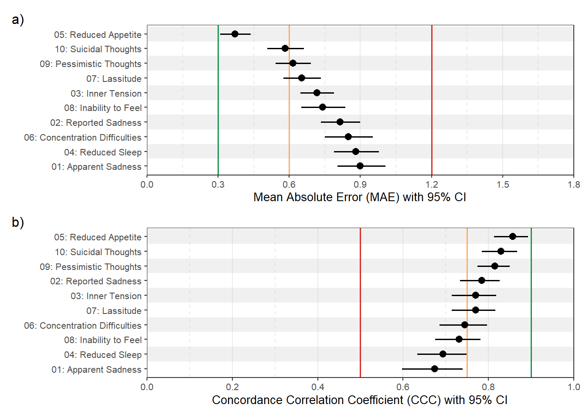
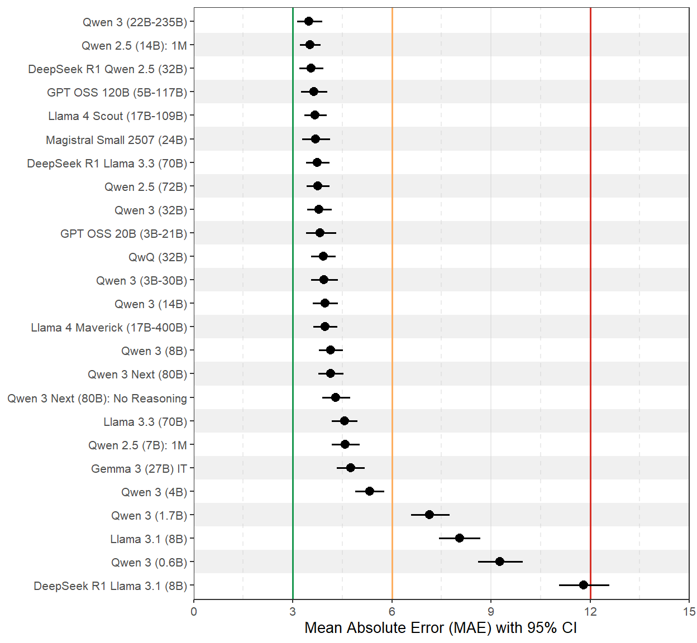
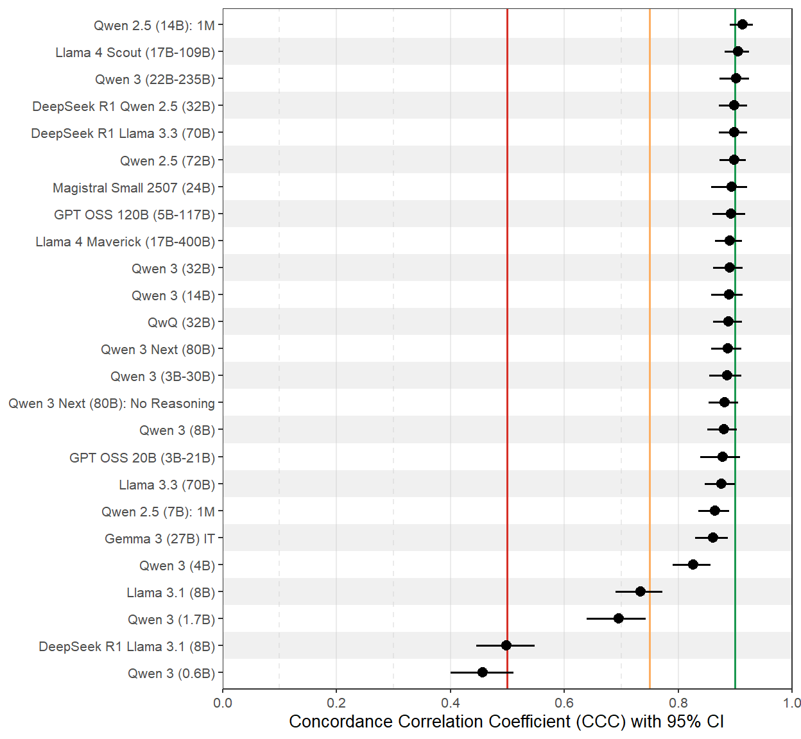

library(tidyverse)
library(patchwork)
library(furrr)
library(gt)
plan("multisession", workers = 10)Performance Analyses
Setup
Tidy Data
# Predictions (public, ../data) joined to human ratings (NDA, ../nda)
source("load_data.R")
fewshot_raw <- load_prediction_sheets(conditions = "full")
fewshot_sheets <- names(fewshot_raw)# Sessions used as fewshot examples (excluded from evaluation)
excluded_ids <- load_exemplars()# Collect total score labels and direct total score predictions
fewshot_total <-
fewshot_raw[[1]] |>
select(
session, patient, model_name,
ground_truth, rating_0, rating_1, rating_2
) |>
filter(session %in% excluded_ids[[1]] == FALSE) |>
summarize(
.by = c(session, patient, model_name),
label00 = mean(ground_truth) / 10,
direct00 = rowMeans(pick(rating_0, rating_1, rating_2), na.rm = TRUE) / 10
)# Collect item score labels and item score predictions
item_indices <- 2:11
item_dfs <- map(
item_indices,
\(i) {
gt_name <- sprintf("label%02d", i-1)
pv_name <- sprintf("pred%02d", i-1)
fewshot_raw[[i]] |>
transmute(
session,
patient,
model_name,
!!gt_name := ground_truth,
!!pv_name := rowMeans(pick(rating_0, rating_1, rating_2), na.rm = TRUE)
) |>
filter(session %in% excluded_ids[[i]] == FALSE)
}
)# Combine collected data and calculate indirect total score predictions
fewshot_all <-
reduce(
item_dfs,
~ full_join(.x, .y, by = c("session", "patient", "model_name"))
) |>
mutate(
indirect00 = rowMeans(
pick(num_range(prefix = "pred", range = 1:10, width = 2)),
na.rm = FALSE
)
) |>
full_join(fewshot_total, by = c("session", "patient", "model_name")) |>
relocate(label00, .before = indirect00)Setup and Run Cluster Bootstrap Analysis
cluster_boot_comparison <- function(
dat,
B = 10000,
seed = 2026
){
# --------------------------------------------------------------------------
# Helpers ------------------------------------------------------------------
# --------------------------------------------------------------------------
ccc_vec <- \(x, y) {
ok <- complete.cases(x, y)
x <- x[ok]
y <- y[ok]
# guard against tiny samples / no variance
if (length(x) < 2L) return(NA_real_)
var_x <- var(x)
var_y <- var(y)
if (var_x == 0 || var_y == 0) return(NA_real_)
mu_x <- mean(x)
mu_y <- mean(y)
cov_xy <- cov(x, y)
(2 * cov_xy) / (var_x + var_y + (mu_x - mu_y)^2)
}
calc_null_shifted_pvalue <- function(boot_dist, obs_val) {
boot_dist <- boot_dist[!is.na(boot_dist)]
if(length(boot_dist) == 0) return(NA_real_)
null_dist <- boot_dist - mean(boot_dist)
mean(abs(null_dist) >= abs(obs_val))
}
# --------------------------------------------------------------------------
# Pre-split by patient (cluster bootstrap units) ---------------------------
# --------------------------------------------------------------------------
patient_list <- dat |> group_split(patient, .keep = TRUE)
n_patients <- length(patient_list)
# --------------------------------------------------------------------------
# Pre-pivot and Pre-split Data ---------------------------------------------
# --------------------------------------------------------------------------
items_long <-
dat |>
pivot_longer(
cols = matches("^(label|pred)(0[1-9]|10)$"),
names_to = c(".value", "suffix"),
names_pattern = "(label|pred)(0[1-9]|10)"
) |>
mutate(comparison = paste0("item", suffix)) |>
select(model_name, patient, comparison, label, pred)
total_long <-
dat |>
select(model_name, patient, label00, direct00, indirect00) |>
pivot_longer(
cols = c(direct00, indirect00),
names_to = "comparison",
values_to = "pred"
) |>
mutate(
comparison = if_else(comparison == "direct00", "00_direct", "00_indirect"),
label = label00
) |>
select(model_name, patient, comparison, label, pred)
dat_long <- bind_rows(items_long, total_long)
patient_list <- dat_long |> group_split(patient, .keep = TRUE)
n_patients <- length(patient_list)
# --------------------------------------------------------------------------
# Simplified compute_stats -------------------------------------------------
# --------------------------------------------------------------------------
compute_stats <- function(df) {
df |>
summarise(
mae = mean(abs(pred - label), na.rm = TRUE),
ccc = ccc_vec(pred, label),
.by = c(model_name, comparison)
)
}
# --------------------------------------------------------------------------
# Observed (non-bootstrapped) estimates
# --------------------------------------------------------------------------
observed <- compute_stats(dat_long)
# --------------------------------------------------------------------------
# Bootstrap
# --------------------------------------------------------------------------
set.seed(seed)
boot_results <-
future_map(
seq_len(B),
\(b) {
idx <- sample.int(n_patients, size = n_patients, replace = TRUE)
df_b <- bind_rows(patient_list[idx])
compute_stats(df_b) |> mutate(boot = b)
},
.progress = TRUE,
.options = furrr_options(
seed = TRUE,
globals = c("patient_list", "compute_stats", "ccc_vec"),
packages = "dplyr"
)
) |>
list_rbind()
# --------------------------------------------------------------------------
# Bootstrap CIs for each model × comparison (MAE, CCC)
# --------------------------------------------------------------------------
boot_summary <-
boot_results |>
summarize(
mae_lower = quantile(mae, 0.025, na.rm = TRUE),
mae_upper = quantile(mae, 0.975, na.rm = TRUE),
ccc_lower = quantile(ccc, 0.025, na.rm = TRUE),
ccc_upper = quantile(ccc, 0.975, na.rm = TRUE),
.by = c(model_name, comparison)
)
# --------------------------------------------------------------------------
# Build item01 ... item10 data frames (one per item) -----------------------
# --------------------------------------------------------------------------
item_list <- lapply(1:10, function(k) {
comp <- paste0("item", sprintf("%02d", k))
obs_k <- observed |> filter(comparison == comp)
boot_k <- boot_summary |> filter(comparison == comp)
obs_k |>
left_join(boot_k, by = c("model_name", "comparison")) |>
select(
model_name,
mae, mae_lower, mae_upper,
ccc, ccc_lower, ccc_upper
)
})
names(item_list) <- sprintf("item%02d", 1:10)
# --------------------------------------------------------------------------
# Item 00: direct vs indirect, wide + diffs + p-values ---------------------
# --------------------------------------------------------------------------
# Observed 00 (long)
observed00 <-
observed |>
filter(comparison %in% c("00_direct", "00_indirect"))
# Observed 00 (wide): per model, separate cols for direct/indirect
obs00_wide <-
observed00 |>
pivot_wider(
names_from = comparison,
values_from = c(mae, ccc),
names_glue = "{.value}_{comparison}"
)
# CIs for direct/indirect from bootstrap (still per comparison)
boot00 <-
boot_summary |>
filter(comparison %in% c("00_direct", "00_indirect"))
# Wide CIs: one row per model, columns for direct & indirect
boot00_wide <-
boot00 |>
pivot_wider(
names_from = comparison,
values_from = c(mae_lower, mae_upper, ccc_lower, ccc_upper),
names_glue = "{.value}_{comparison}"
)
# Observed differences (indirect - direct)
observed_diff <-
obs00_wide |>
mutate(
diff_mae_obs = mae_00_indirect - mae_00_direct,
diff_ccc_obs = ccc_00_indirect - ccc_00_direct
) |>
select(model_name, diff_mae_obs, diff_ccc_obs)
# Bootstrap differences
boot_diff <-
boot_results |>
filter(comparison %in% c("00_direct", "00_indirect")) |>
pivot_wider(
names_from = comparison,
values_from = c(mae, ccc),
names_glue = "{.value}_{comparison}"
) |>
mutate(
diff_mae = mae_00_indirect - mae_00_direct,
diff_ccc = ccc_00_indirect - ccc_00_direct
)
# CIs for differences
boot_diff_summary <-
boot_diff |>
summarize(
diff_mae_lower = quantile(diff_mae, 0.025, na.rm = TRUE),
diff_mae_upper = quantile(diff_mae, 0.975, na.rm = TRUE),
diff_ccc_lower = quantile(diff_ccc, 0.025, na.rm = TRUE),
diff_ccc_upper = quantile(diff_ccc, 0.975, na.rm = TRUE),
.by = model_name
)
# Two-sided bootstrap p-values for differences using null-shifted distribution
boot_diff_pvals <-
boot_diff |>
left_join(observed_diff, by = "model_name") |>
summarize(
p_diff_mae = calc_null_shifted_pvalue(diff_mae, first(diff_mae_obs)),
p_diff_ccc = calc_null_shifted_pvalue(diff_ccc, first(diff_ccc_obs)),
.by = model_name
)
# Assemble wide 00 table
item00 <-
obs00_wide |>
left_join(boot00_wide, by = "model_name") |>
left_join(observed_diff, by = "model_name") |>
left_join(boot_diff_summary, by = "model_name") |>
left_join(boot_diff_pvals, by = "model_name") |>
select(
model_name,
# Direct
mae_00_direct,
mae_lower_00_direct, mae_upper_00_direct,
ccc_00_direct,
ccc_lower_00_direct, ccc_upper_00_direct,
# Indirect
mae_00_indirect,
mae_lower_00_indirect, mae_upper_00_indirect,
ccc_00_indirect,
ccc_lower_00_indirect, ccc_upper_00_indirect,
# Differences & p-values
diff_mae_obs, diff_mae_lower, diff_mae_upper, p_diff_mae,
diff_ccc_obs, diff_ccc_lower, diff_ccc_upper, p_diff_ccc
)
# --------------------------------------------------------------------------
# Return: list of 11 elements (item01...item10, item00)
# --------------------------------------------------------------------------
c(item_list, list(item00 = item00))
}results <- cluster_boot_comparison(fewshot_all, B = 10000)Item Score Results
All model–item combinations
walk(
1:10,
\(i) {
tbl <-
results[[i]] |>
arrange(desc(ccc)) |>
gt() |>
tab_header(
title = str_glue("Item {fewshot_sheets[[i+1]]}")
) |>
fmt_number(
columns = -model_name,
decimals = 2
) |>
opt_row_striping() |>
tab_options(data_row.padding = px(5))
print(as_raw_html(tbl))
cat("\n\n")
}
)| Item 01 - Apparent Sadness | ||||||
| model_name | mae | mae_lower | mae_upper | ccc | ccc_lower | ccc_upper |
|---|---|---|---|---|---|---|
| Item 02 - Reported Sadness | ||||||
| model_name | mae | mae_lower | mae_upper | ccc | ccc_lower | ccc_upper |
|---|---|---|---|---|---|---|
| Item 03 - Inner Tension | ||||||
| model_name | mae | mae_lower | mae_upper | ccc | ccc_lower | ccc_upper |
|---|---|---|---|---|---|---|
| Item 04 - Reduced Sleep | ||||||
| model_name | mae | mae_lower | mae_upper | ccc | ccc_lower | ccc_upper |
|---|---|---|---|---|---|---|
| Item 05 - Reduced Appetite | ||||||
| model_name | mae | mae_lower | mae_upper | ccc | ccc_lower | ccc_upper |
|---|---|---|---|---|---|---|
| Item 06 - Concentration Difficulties | ||||||
| model_name | mae | mae_lower | mae_upper | ccc | ccc_lower | ccc_upper |
|---|---|---|---|---|---|---|
| Item 07 - Lassitude | ||||||
| model_name | mae | mae_lower | mae_upper | ccc | ccc_lower | ccc_upper |
|---|---|---|---|---|---|---|
| Item 08 - Inability to Feel | ||||||
| model_name | mae | mae_lower | mae_upper | ccc | ccc_lower | ccc_upper |
|---|---|---|---|---|---|---|
| Item 09 - Pessimistic Thoughts | ||||||
| model_name | mae | mae_lower | mae_upper | ccc | ccc_lower | ccc_upper |
|---|---|---|---|---|---|---|
| Item 10 - Suicidal Thoughts | ||||||
| model_name | mae | mae_lower | mae_upper | ccc | ccc_lower | ccc_upper |
|---|---|---|---|---|---|---|
Summary table per model across items
bind_rows(results[1:10], .id = "item") |>
summarize(
.by = model_name,
mae_m = mean(mae),
mae_s = sd(mae),
ccc_m = mean(ccc),
ccc_s = sd(ccc)
) |>
arrange(desc(ccc_m)) |>
gt() |>
fmt_number(
columns = -model_name,
decimals = 2
) |>
opt_row_striping() |>
tab_options(data_row.padding = px(5))| model_name | mae_m | mae_s | ccc_m | ccc_s |
|---|---|---|---|---|
| Qwen 3 (22B-235B) | 0.71 | 0.16 | 0.77 | 0.06 |
| Qwen 2.5 (72B) | 0.74 | 0.15 | 0.75 | 0.06 |
| GPT OSS 120B (5B-117B) | 0.75 | 0.16 | 0.75 | 0.05 |
| DeepSeek R1 Qwen 2.5 (32B) | 0.76 | 0.15 | 0.75 | 0.05 |
| Llama 4 Scout (17B-109B) | 0.75 | 0.17 | 0.75 | 0.06 |
| DeepSeek R1 Llama 3.3 (70B) | 0.79 | 0.16 | 0.75 | 0.05 |
| Magistral Small 2507 (24B) | 0.74 | 0.17 | 0.75 | 0.06 |
| Qwen 2.5 (14B): 1M | 0.78 | 0.15 | 0.75 | 0.06 |
| Llama 3.3 (70B) | 0.80 | 0.14 | 0.74 | 0.05 |
| QwQ (32B) | 0.79 | 0.15 | 0.74 | 0.05 |
| Qwen 3 (32B) | 0.78 | 0.14 | 0.74 | 0.06 |
| GPT OSS 20B (3B-21B) | 0.80 | 0.17 | 0.73 | 0.05 |
| Qwen 3 (14B) | 0.84 | 0.19 | 0.73 | 0.06 |
| Qwen 3 Next (80B) | 0.85 | 0.16 | 0.73 | 0.06 |
| Llama 4 Maverick (17B-400B) | 0.79 | 0.20 | 0.73 | 0.09 |
| Qwen 3 (3B-30B) | 0.82 | 0.19 | 0.73 | 0.07 |
| Gemma 3 (27B) IT | 0.88 | 0.15 | 0.71 | 0.07 |
| Qwen 2.5 (7B): 1M | 0.89 | 0.17 | 0.71 | 0.07 |
| Qwen 3 Next (80B): No Reasoning | 0.88 | 0.15 | 0.71 | 0.06 |
| Qwen 3 (8B) | 0.90 | 0.20 | 0.70 | 0.08 |
| Qwen 3 (4B) | 1.01 | 0.26 | 0.67 | 0.09 |
| Llama 3.1 (8B) | 1.23 | 0.20 | 0.62 | 0.10 |
| Qwen 3 (1.7B) | 1.18 | 0.43 | 0.57 | 0.15 |
| DeepSeek R1 Llama 3.1 (8B) | 1.41 | 0.36 | 0.51 | 0.14 |
| Qwen 3 (0.6B) | 1.42 | 0.30 | 0.39 | 0.16 |
Summary table per item across models
bind_rows(results[1:10], .id = "item") |>
summarize(
.by = item,
mae_m = mean(mae),
mae_s = sd(mae),
ccc_m = mean(ccc),
ccc_s = sd(ccc)
) |>
arrange(desc(ccc_m)) |>
gt() |>
fmt_number(
columns = -item,
decimals = 2
) |>
opt_row_striping() |>
tab_options(data_row.padding = px(5))| item | mae_m | mae_s | ccc_m | ccc_s |
|---|---|---|---|---|
| item10 | 0.72 | 0.18 | 0.78 | 0.07 |
| item09 | 0.76 | 0.15 | 0.78 | 0.05 |
| item03 | 0.84 | 0.14 | 0.74 | 0.06 |
| item02 | 0.95 | 0.15 | 0.73 | 0.07 |
| item05 | 0.62 | 0.34 | 0.73 | 0.14 |
| item06 | 0.94 | 0.13 | 0.70 | 0.07 |
| item07 | 0.91 | 0.27 | 0.66 | 0.12 |
| item04 | 1.01 | 0.28 | 0.63 | 0.13 |
| item01 | 1.09 | 0.17 | 0.62 | 0.07 |
| item08 | 1.06 | 0.42 | 0.62 | 0.16 |
Figure per item for best overall model
# Plot of best model
bench1 <- 1.2
bench2 <- 0.6
bench3 <- 0.3
item_plot_data <-
bind_rows(results[1:10], .id = "item") |>
filter(model_name == "Qwen 3 (22B-235B)")
stripe_df <-
item_plot_data |>
mutate(
item = factor(
item,
levels = sprintf("item%02d", 1:10),
labels = c(
"01: Reported Sadness",
"02: Apparent Sadness",
"03: Inner Tension",
"04: Reduced Sleep",
"05: Reduced Appetite",
"06: Concentration Difficulties",
"07: Lassitude",
"08: Inability to Feel",
"09: Pessimistic Thoughts",
"10: Suicidal Thoughts"
)
),
item = fct_reorder(item, .x = mae, .desc = TRUE),
y_id = as.numeric(item)
) |>
filter(y_id %% 2 == 0) |>
transmute(
ymin = y_id - 0.5,
ymax = y_id + 0.5,
xmin = -Inf,
xmax = Inf
)
p1 <-
item_plot_data |>
mutate(
item = factor(
item,
levels = sprintf("item%02d", 1:10),
labels = c(
"01: Apparent Sadness",
"02: Reported Sadness",
"03: Inner Tension",
"04: Reduced Sleep",
"05: Reduced Appetite",
"06: Concentration Difficulties",
"07: Lassitude",
"08: Inability to Feel",
"09: Pessimistic Thoughts",
"10: Suicidal Thoughts"
)
),
item = fct_reorder(item, .x = mae, .desc = TRUE)
) |>
ggplot(
aes(
x = mae,
xmin = mae_lower,
xmax = mae_upper,
y = item
)
) +
geom_rect(
data = stripe_df,
aes(xmin = xmin, xmax = xmax, ymin = ymin, ymax = ymax),
inherit.aes = FALSE,
fill = "grey80",
alpha = 0.3
) +
geom_vline(xintercept = bench1, color = "#D73027", linewidth = 2/3) +
geom_vline(xintercept = bench2, color = "#FDAE61", linewidth = 2/3) +
geom_vline(xintercept = bench3, color = "#1A9850", linewidth = 2/3) +
geom_pointrange(linewidth = 2/3) +
scale_x_continuous(
limits = c(0, 1.8),
expand = c(0, 0),
breaks = seq(0, 1.8, 0.3)
) +
labs(x = "Mean Absolute Error (MAE) with 95% CI", y = NULL) +
theme_bw(base_size = 10) +
theme(
panel.grid.major.y = element_blank(),
panel.grid.minor.y = element_blank(),
panel.grid.major.x = element_line(linewidth = 1/2, linetype = "solid"),
panel.grid.minor.x = element_line(linewidth = 1/2, linetype = "dashed")
)# Plot of best model
bench1 <- 0.50
bench2 <- 0.75
bench3 <- 0.90
item_plot_data <-
bind_rows(results[1:10], .id = "item") |>
filter(model_name == "Qwen 3 (22B-235B)")
stripe_df <-
item_plot_data |>
mutate(
item = factor(
item,
levels = sprintf("item%02d", 1:10),
labels = c(
"01: Reported Sadness",
"02: Apparent Sadness",
"03: Inner Tension",
"04: Reduced Sleep",
"05: Reduced Appetite",
"06: Concentration Difficulties",
"07: Lassitude",
"08: Inability to Feel",
"09: Pessimistic Thoughts",
"10: Suicidal Thoughts"
)
),
item = fct_reorder(item, .x = ccc),
y_id = as.numeric(item)
) |>
filter(y_id %% 2 == 0) |>
transmute(
ymin = y_id - 0.5,
ymax = y_id + 0.5,
xmin = -Inf,
xmax = Inf
)
p2 <-
item_plot_data |>
mutate(
item = factor(
item,
levels = sprintf("item%02d", 1:10),
labels = c(
"01: Apparent Sadness",
"02: Reported Sadness",
"03: Inner Tension",
"04: Reduced Sleep",
"05: Reduced Appetite",
"06: Concentration Difficulties",
"07: Lassitude",
"08: Inability to Feel",
"09: Pessimistic Thoughts",
"10: Suicidal Thoughts"
)
),
item = fct_reorder(item, .x = ccc)
) |>
ggplot(
aes(
x = ccc,
xmin = ccc_lower,
xmax = ccc_upper,
y = item
)
) +
geom_rect(
data = stripe_df,
aes(xmin = xmin, xmax = xmax, ymin = ymin, ymax = ymax),
inherit.aes = FALSE,
fill = "grey80",
alpha = 0.3
) +
geom_vline(xintercept = bench1, color = "#D73027", linewidth = 2/3) +
geom_vline(xintercept = bench2, color = "#FDAE61", linewidth = 2/3) +
geom_vline(xintercept = bench3, color = "#1A9850", linewidth = 2/3) +
geom_pointrange(linewidth = 2/3) +
scale_x_continuous(
limits = c(0, 1),
expand = c(0, 0),
breaks = seq(0, 1, 0.2)
) +
labs(x = "Concordance Correlation Coefficient (CCC) with 95% CI", y = NULL) +
theme_bw(base_size = 10) +
theme(
panel.grid.major.y = element_blank(),
panel.grid.minor.y = element_blank(),
panel.grid.major.x = element_line(linewidth = 1/2, linetype = "solid"),
panel.grid.minor.x = element_line(linewidth = 1/2, linetype = "dashed")
)(p1 / p2) + plot_annotation(tag_levels = "a", tag_suffix = ")")
ggsave("best_item.pdf", width = 6.5, height = 6.0, units = "in")Total Score Results
MAE results table and figure
results[[11]] |>
transmute(
model_name,
direct = mae_00_direct * 10,
direct_ci = sprintf("[%.1f, %.1f]", mae_lower_00_direct * 10, mae_upper_00_direct * 10),
indirect = mae_00_indirect * 10,
indirect_ci = sprintf("[%.1f, %.1f]", mae_lower_00_indirect * 10, mae_upper_00_indirect * 10),
diff = diff_mae_obs * 10,
diff_ci = sprintf("[%.1f, %.1f]", diff_mae_lower * 10, diff_mae_upper * 10),
p_adj = p.adjust(p_diff_mae, method = "fdr"),
sig = if_else(p_adj < .05, "*", "")
) |>
arrange(indirect) |>
gt() |>
fmt_number(columns = c(direct, indirect, diff), decimals = 1) |>
fmt_number(columns = p_adj, decimals = 4) |>
cols_align(align = "center", columns = -model_name) |>
opt_row_striping() |>
tab_options(data_row.padding = px(5))| model_name | direct | direct_ci | indirect | indirect_ci | diff | diff_ci | p_adj | sig |
|---|---|---|---|---|---|---|---|---|
| Qwen 3 (22B-235B) | 5.2 | [4.8, 5.6] | 3.5 | [3.1, 3.9] | −1.7 | [-2.2, -1.2] | 0.0000 | * |
| Qwen 2.5 (14B): 1M | 5.8 | [5.4, 6.3] | 3.5 | [3.2, 3.8] | −2.3 | [-2.8, -1.8] | 0.0000 | * |
| DeepSeek R1 Qwen 2.5 (32B) | 7.0 | [6.5, 7.6] | 3.6 | [3.2, 3.9] | −3.5 | [-4.1, -2.8] | 0.0000 | * |
| GPT OSS 120B (5B-117B) | 5.7 | [5.2, 6.2] | 3.6 | [3.3, 4.0] | −2.1 | [-2.6, -1.6] | 0.0000 | * |
| Llama 4 Scout (17B-109B) | 5.6 | [5.2, 6.0] | 3.7 | [3.3, 4.0] | −1.9 | [-2.3, -1.4] | 0.0000 | * |
| Magistral Small 2507 (24B) | 7.3 | [6.8, 7.8] | 3.7 | [3.3, 4.1] | −3.6 | [-4.4, -2.8] | 0.0000 | * |
| DeepSeek R1 Llama 3.3 (70B) | 9.2 | [8.4, 10.1] | 3.7 | [3.4, 4.1] | −5.5 | [-6.4, -4.6] | 0.0000 | * |
| Qwen 2.5 (72B) | 5.3 | [4.9, 5.8] | 3.8 | [3.4, 4.1] | −1.6 | [-2.0, -1.1] | 0.0000 | * |
| Qwen 3 (32B) | 10.6 | [9.5, 11.8] | 3.8 | [3.4, 4.2] | −6.8 | [-8.1, -5.7] | 0.0000 | * |
| GPT OSS 20B (3B-21B) | 7.0 | [6.4, 7.6] | 3.8 | [3.4, 4.3] | −3.2 | [-3.9, -2.5] | 0.0000 | * |
| QwQ (32B) | 11.1 | [10.2, 12.0] | 3.9 | [3.6, 4.3] | −7.1 | [-8.0, -6.3] | 0.0000 | * |
| Qwen 3 (3B-30B) | 12.4 | [10.8, 14.1] | 3.9 | [3.5, 4.4] | −8.4 | [-10.2, -6.8] | 0.0000 | * |
| Qwen 3 (14B) | 9.6 | [8.9, 10.3] | 4.0 | [3.6, 4.4] | −5.7 | [-6.4, -4.9] | 0.0000 | * |
| Llama 4 Maverick (17B-400B) | 5.5 | [5.1, 5.9] | 4.0 | [3.6, 4.3] | −1.6 | [-2.0, -1.1] | 0.0000 | * |
| Qwen 3 (8B) | 11.7 | [11.0, 12.5] | 4.1 | [3.8, 4.5] | −7.6 | [-8.4, -6.8] | 0.0000 | * |
| Qwen 3 Next (80B) | 5.3 | [4.9, 5.7] | 4.1 | [3.8, 4.5] | −1.1 | [-1.6, -0.7] | 0.0000 | * |
| Qwen 3 Next (80B): No Reasoning | 8.8 | [8.0, 9.6] | 4.3 | [3.9, 4.7] | −4.5 | [-5.3, -3.8] | 0.0000 | * |
| Llama 3.3 (70B) | 7.1 | [6.5, 7.6] | 4.6 | [4.2, 5.0] | −2.5 | [-3.1, -1.9] | 0.0000 | * |
| Qwen 2.5 (7B): 1M | 5.7 | [5.3, 6.2] | 4.6 | [4.2, 5.0] | −1.2 | [-1.6, -0.7] | 0.0000 | * |
| Gemma 3 (27B) IT | 12.1 | [11.3, 12.9] | 4.8 | [4.3, 5.2] | −7.4 | [-8.1, -6.6] | 0.0000 | * |
| Qwen 3 (4B) | 13.0 | [12.1, 13.8] | 5.3 | [4.9, 5.8] | −7.6 | [-8.5, -6.8] | 0.0000 | * |
| Qwen 3 (1.7B) | 10.6 | [9.8, 11.3] | 7.1 | [6.6, 7.8] | −3.4 | [-4.4, -2.4] | 0.0000 | * |
| Llama 3.1 (8B) | 12.7 | [11.8, 13.6] | 8.0 | [7.4, 8.7] | −4.6 | [-5.4, -3.8] | 0.0000 | * |
| Qwen 3 (0.6B) | 15.8 | [14.7, 16.9] | 9.3 | [8.6, 10.0] | −6.5 | [-7.4, -5.6] | 0.0000 | * |
| DeepSeek R1 Llama 3.1 (8B) | 11.4 | [10.6, 12.2] | 11.8 | [11.1, 12.6] | 0.4 | [-0.4, 1.3] | 0.3045 |
bench1 <- 12
bench2 <- 06
bench3 <- 03
total_plot_data <-
results[[11]] |>
transmute(
model_name,
mae = mae_00_indirect * 10,
mae_lower = mae_lower_00_indirect * 10,
mae_upper = mae_upper_00_indirect * 10
)
stripe_df <-
total_plot_data |>
mutate(
model = fct_reorder(model_name, .x = mae, .desc = TRUE),
y_id = as.numeric(model)
) |>
filter(y_id %% 2 == 0) |>
transmute(
ymin = y_id - 0.5,
ymax = y_id + 0.5,
xmin = -Inf,
xmax = Inf
)
p1 <-
total_plot_data |>
mutate(
model = fct_reorder(model_name, .x = mae, .desc = TRUE),
) |>
ggplot(
aes(
x = mae,
xmin = mae_lower,
xmax = mae_upper,
y = model
)
) +
geom_rect(
data = stripe_df,
aes(xmin = xmin, xmax = xmax, ymin = ymin, ymax = ymax),
inherit.aes = FALSE,
fill = "grey80",
alpha = 0.3
) +
geom_vline(xintercept = bench1, color = "#D73027", linewidth = 2/3) +
geom_vline(xintercept = bench2, color = "#FDAE61", linewidth = 2/3) +
geom_vline(xintercept = bench3, color = "#1A9850", linewidth = 2/3) +
geom_pointrange(linewidth = 2/3) +
scale_x_continuous(
limits = c(0, 15),
expand = c(0, 0),
breaks = seq(0, 15, 3)
) +
labs(x = "Mean Absolute Error (MAE) with 95% CI", y = NULL) +
theme_bw(base_size = 10) +
theme(
panel.grid.major.y = element_blank(),
panel.grid.minor.y = element_blank(),
panel.grid.major.x = element_line(linewidth = 1/2, linetype = "solid"),
panel.grid.minor.x = element_line(linewidth = 1/2, linetype = "dashed")
)
p1
ggsave("mae_indirect.pdf", width = 6.5, height = 6.0, units = "in")CCC results table and figure
results[[11]] |>
transmute(
model_name,
direct = ccc_00_direct,
direct_ci = sprintf("[%.2f, %.2f]", ccc_lower_00_direct, ccc_upper_00_direct),
indirect = ccc_00_indirect,
indirect_ci = sprintf("[%.2f, %.2f]", ccc_lower_00_indirect, ccc_upper_00_indirect),
diff = diff_ccc_obs,
diff_ci = sprintf("[%.2f, %.2f]", diff_ccc_lower, diff_ccc_upper),
p_adj = p.adjust(p_diff_ccc, method = "fdr"),
sig = if_else(p_adj < .05, "*", "")
) |>
arrange(desc(indirect)) |>
gt() |>
fmt_number(columns = c(direct, indirect, diff), decimals = 2) |>
fmt_number(columns = p_adj, decimals = 3) |>
cols_align(align = "center", columns = -model_name) |>
opt_row_striping() |>
tab_options(data_row.padding = px(5))| model_name | direct | direct_ci | indirect | indirect_ci | diff | diff_ci | p_adj | sig |
|---|---|---|---|---|---|---|---|---|
| Qwen 2.5 (14B): 1M | 0.80 | [0.77, 0.83] | 0.91 | [0.89, 0.93] | 0.11 | [0.08, 0.15] | 0.000 | * |
| Llama 4 Scout (17B-109B) | 0.80 | [0.77, 0.83] | 0.90 | [0.88, 0.92] | 0.11 | [0.07, 0.14] | 0.000 | * |
| Qwen 3 (22B-235B) | 0.86 | [0.84, 0.88] | 0.90 | [0.87, 0.92] | 0.04 | [0.01, 0.07] | 0.004 | * |
| DeepSeek R1 Qwen 2.5 (32B) | 0.68 | [0.62, 0.73] | 0.90 | [0.87, 0.92] | 0.22 | [0.16, 0.29] | 0.000 | * |
| DeepSeek R1 Llama 3.3 (70B) | 0.66 | [0.59, 0.71] | 0.90 | [0.87, 0.92] | 0.24 | [0.18, 0.31] | 0.000 | * |
| Qwen 2.5 (72B) | 0.84 | [0.80, 0.86] | 0.90 | [0.87, 0.92] | 0.06 | [0.04, 0.09] | 0.000 | * |
| Magistral Small 2507 (24B) | 0.73 | [0.69, 0.76] | 0.89 | [0.86, 0.92] | 0.17 | [0.12, 0.21] | 0.000 | * |
| GPT OSS 120B (5B-117B) | 0.81 | [0.77, 0.84] | 0.89 | [0.86, 0.92] | 0.08 | [0.05, 0.11] | 0.000 | * |
| Llama 4 Maverick (17B-400B) | 0.82 | [0.79, 0.85] | 0.89 | [0.86, 0.91] | 0.07 | [0.04, 0.10] | 0.000 | * |
| Qwen 3 (32B) | 0.46 | [0.37, 0.54] | 0.89 | [0.86, 0.91] | 0.43 | [0.34, 0.52] | 0.000 | * |
| Qwen 3 (14B) | 0.62 | [0.56, 0.67] | 0.89 | [0.86, 0.91] | 0.27 | [0.22, 0.32] | 0.000 | * |
| QwQ (32B) | 0.53 | [0.45, 0.60] | 0.89 | [0.86, 0.91] | 0.35 | [0.29, 0.43] | 0.000 | * |
| Qwen 3 Next (80B) | 0.86 | [0.83, 0.88] | 0.89 | [0.86, 0.91] | 0.03 | [0.01, 0.05] | 0.013 | * |
| Qwen 3 (3B-30B) | 0.30 | [0.16, 0.43] | 0.89 | [0.85, 0.91] | 0.59 | [0.46, 0.73] | 0.000 | * |
| Qwen 3 Next (80B): No Reasoning | 0.70 | [0.66, 0.74] | 0.88 | [0.85, 0.91] | 0.18 | [0.14, 0.22] | 0.000 | * |
| Qwen 3 (8B) | 0.54 | [0.49, 0.59] | 0.88 | [0.85, 0.90] | 0.34 | [0.29, 0.39] | 0.000 | * |
| GPT OSS 20B (3B-21B) | 0.78 | [0.74, 0.81] | 0.88 | [0.84, 0.91] | 0.10 | [0.06, 0.14] | 0.000 | * |
| Llama 3.3 (70B) | 0.77 | [0.73, 0.81] | 0.88 | [0.85, 0.90] | 0.10 | [0.07, 0.14] | 0.000 | * |
| Qwen 2.5 (7B): 1M | 0.81 | [0.78, 0.84] | 0.86 | [0.83, 0.89] | 0.05 | [0.03, 0.08] | 0.000 | * |
| Gemma 3 (27B) IT | 0.57 | [0.52, 0.61] | 0.86 | [0.83, 0.89] | 0.29 | [0.26, 0.33] | 0.000 | * |
| Qwen 3 (4B) | 0.45 | [0.40, 0.51] | 0.83 | [0.79, 0.86] | 0.37 | [0.33, 0.42] | 0.000 | * |
| Llama 3.1 (8B) | 0.53 | [0.49, 0.58] | 0.73 | [0.69, 0.77] | 0.20 | [0.17, 0.23] | 0.000 | * |
| Qwen 3 (1.7B) | 0.25 | [0.16, 0.34] | 0.70 | [0.64, 0.74] | 0.44 | [0.35, 0.54] | 0.000 | * |
| DeepSeek R1 Llama 3.1 (8B) | 0.49 | [0.44, 0.55] | 0.50 | [0.44, 0.55] | 0.00 | [-0.04, 0.05] | 0.848 | |
| Qwen 3 (0.6B) | −0.14 | [-0.21, -0.07] | 0.46 | [0.40, 0.51] | 0.60 | [0.50, 0.69] | 0.000 | * |
# Plot of best model
bench1 <- 0.50
bench2 <- 0.75
bench3 <- 0.90
total_plot_data <-
results[[11]] |>
transmute(
model_name,
ccc = ccc_00_indirect,
ccc_lower = ccc_lower_00_indirect,
ccc_upper = ccc_upper_00_indirect
)
stripe_df <-
total_plot_data |>
mutate(
model = fct_reorder(model_name, .x = ccc, .desc = FALSE),
y_id = as.numeric(model)
) |>
filter(y_id %% 2 == 0) |>
transmute(
ymin = y_id - 0.5,
ymax = y_id + 0.5,
xmin = -Inf,
xmax = Inf
)
p1 <-
total_plot_data |>
mutate(
model = fct_reorder(model_name, .x = ccc, .desc = FALSE),
) |>
ggplot(
aes(
x = ccc,
xmin = ccc_lower,
xmax = ccc_upper,
y = model
)
) +
geom_rect(
data = stripe_df,
aes(xmin = xmin, xmax = xmax, ymin = ymin, ymax = ymax),
inherit.aes = FALSE,
fill = "grey80",
alpha = 0.3
) +
geom_vline(xintercept = bench1, color = "#D73027", linewidth = 2/3) +
geom_vline(xintercept = bench2, color = "#FDAE61", linewidth = 2/3) +
geom_vline(xintercept = bench3, color = "#1A9850", linewidth = 2/3) +
geom_pointrange(linewidth = 2/3) +
scale_x_continuous(
limits = c(0, 1),
expand = c(0, 0),
breaks = seq(0, 1, 0.2)
) +
labs(x = "Concordance Correlation Coefficient (CCC) with 95% CI", y = NULL) +
theme_bw(base_size = 10) +
theme(
panel.grid.major.y = element_blank(),
panel.grid.minor.y = element_blank(),
panel.grid.major.x = element_line(linewidth = 1/2, linetype = "solid"),
panel.grid.minor.x = element_line(linewidth = 1/2, linetype = "dashed")
)
p1
ggsave("ccc_indirect.pdf", width = 6.5, height = 6.0, units = "in")Directional Error
best_model_data <-
fewshot_all |>
filter(model_name == "Qwen 3 (22B-235B)") |>
mutate(
# Multiply by 10 to convert back to the 0-60 total score scale
label = label00 * 10,
pred = indirect00 * 10
)
directional_summary <-
best_model_data |>
mutate(
severity_bin = case_when(
label <= 6 ~ "Normal (0-6)",
label >= 7 & label <= 19 ~ "Mild (7-19)",
label >= 20 & label <= 34 ~ "Moderate (20-34)",
label >= 35 ~ "Severe (35-60)",
.default = NA_character_
),
severity_bin = fct_relevel(
severity_bin,
"Normal (0-6)", "Mild (7-19)", "Moderate (20-34)", "Severe (35-60)"
),
error = pred - label,
abs_error = abs(error)
) |>
filter(!is.na(severity_bin)) |>
summarize(
.by = severity_bin,
mean_error = mean(error, na.rm = TRUE),
mae = mean(abs_error, na.rm = TRUE),
n = n()
) |>
arrange(severity_bin)
# Create the styled gt table
directional_summary |>
gt() |>
tab_header(
title = "Directional Error Analysis by Clinical Severity",
subtitle = "Analysis of Prediction Bias and Accuracy for Qwen 3 (22B-235B)"
) |>
cols_label(
severity_bin = "Severity Range",
mean_error = "Mean Error (Bias)",
mae = "MAE",
n = "Sample Size (N)"
) |>
fmt_number(
columns = c(mean_error, mae),
decimals = 2
) |>
# Apply a color scale to Mean Error to highlight over/underestimation
data_color(
columns = mean_error,
palette = c("#2166ac", "white", "#b2182b"), # Blue (under) to Red (over)
domain = c(-6, 6) # Adjust this range based on your typical error spread
) |>
cols_align(
align = "center",
columns = -severity_bin
) |>
tab_source_note(
source_note = "Note: Positive Mean Error indicates overestimation; negative indicates underestimation."
) |>
opt_row_striping() |>
tab_options(
heading.title.font.size = px(20),
column_labels.font.weight = "bold",
data_row.padding = px(8)
)| Directional Error Analysis by Clinical Severity | |||
| Analysis of Prediction Bias and Accuracy for Qwen 3 (22B-235B) | |||
| Severity Range | Mean Error (Bias) | MAE | Sample Size (N) |
|---|---|---|---|
| Normal (0-6) | 1.61 | 2.12 | 77 |
| Mild (7-19) | 0.08 | 3.17 | 195 |
| Moderate (20-34) | −1.88 | 3.61 | 192 |
| Severe (35-60) | −5.44 | 5.80 | 74 |
| Note: Positive Mean Error indicates overestimation; negative indicates underestimation. | |||